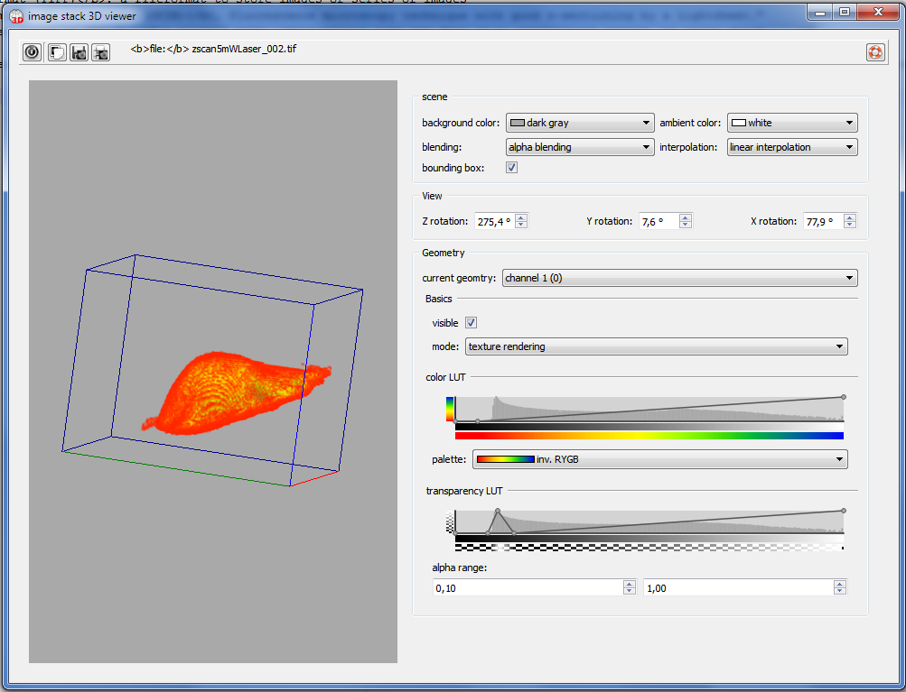
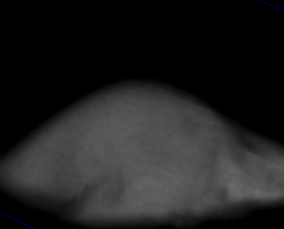
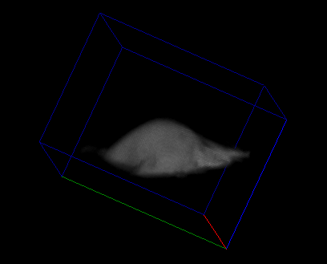

Introduction
This dialog allows to view an image stack as a 3D image. It uses OpenGL to render the 3D image stack to screen. These render modes are available:
This plugin assumes that the image stack is a 3D stack (xyz) with possibly several color channels.
Each color channel is treated as a separate volume dataset with its own settings.
User Interface
You can start the 3D viewer by clicking on the menu entry "Stack Tools | 3D Viewer" after opening the RDR editor of any image stack in the project. If you select a new record, the data from this record will be automatically displayed in the 3D viewer window.
The 3D viewer dialog looks like this:

On the left part of the dialog you see the 3D view. It can be rotated and zoomed:
- rotate: by keeping the left or right mouse button pressed and dragging the mouse over the view. Depending on the mouse button, different angles are rotated
- rotate: you can set the rotation around the X, Y and Z-axis directly in the "View" group on the right.
- zoom: you can zoom in and out using the mouse wheel
Above the 3D view, there are several buttons:
 saves a pixel image (same resolution as on screen) of the current view to a file (PNG, JPEG, TIFF, ...)
saves a pixel image (same resolution as on screen) of the current view to a file (PNG, JPEG, TIFF, ...) copies a pixel image (same resolution as on screen) of the current view to a file
copies a pixel image (same resolution as on screen) of the current view to a file prints the current view (same resolution as on screen)
prints the current view (same resolution as on screen)
On the right hand side, several widgets allow to set the properties of the 3D visualization. Some properties apply to the whole view:
- background color: sets the views background color. If you want to add a color, right-click on the combobox.
- blending: sets the alpha blending mode: The standard mode is alpha blending which leads to a standard representation. You can also select maximum intensity projection. In the latter case you might want to set the transparency LUT to high values for the pixels that should be taken into account. Then the MIP is calculated from the grey values only.
- ambient color: sets the color of the ambient light
- interpolation: sets the interpolation mode between neighboring pixels, i.e. the smoothnes of the 3D representation:
no interpolation: --- linear interpolation:
--- 
- bounding box: switches the bounding box (red: x-direction, green: y-direction, bright-blue: z-direction) on and off

Other properties apply to each 3D volume datset separately. These are grouped in the "Geometry" group. First select the datset to edit in "current geometry", then edit its properties below:
- Basics | visible: switches the selected volume data set on and off
- Basics | mode: sets the rendering mode: currently only "texture rendering" is available (see introduction)
- Basics | color LUT: allows to edit the transfer function (lookup table/LUT) between pixel value and displayed color. Below the LUT editor, you can select the color palette used for the display. The LUT itself is a piecewise linear function, that you can edit by dragging its nodes (small circles) over the editor with the mouse (left button). Double-clicking an existing node deletes it and double-clicking in empty space will add a node. A histogram of the 3D stack's values is shown in the back of the LUT editor (in logarithmic scalig on the y-axis!)
- Basics | color LUT | palette: allows to select a color palette for the 3D volume data.
- Basics | transparency LUT: allows to edit the transfer function (lookup table/LUT) between pixel value and alpha value used for display. The LUT itself is a piecewise linear function, that you can edit by dragging its nodes (small circles) over the editor with the mouse (left button). Double-clicking an existing node deletes it and double-clicking in empty space will add a node. A histogram of the 3D stack's values is shown in the back of the LUT editor (in logarithmic scalig on the y-axis!)
- Basics | transparency LUT| alpha range: These values allow to limit the range of pixels to display. Each value ranges from 0 to 1, where 0 represents the lowest pixel value in the image stack and 1 the highest pixel value. So, if the lower range is 0.1, all pixels below 10% of the maximum pixel values are invisible. the same works for the upper rande, i.e. if it is set to 0.9 all pixel with an intensity above 90% of the maximum pixel intensity are set invisible/transparent.
References
$$references$$